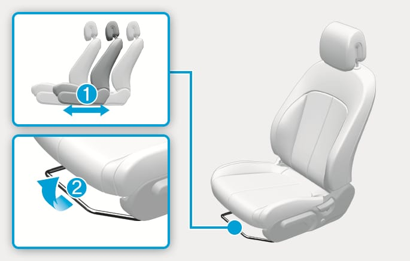
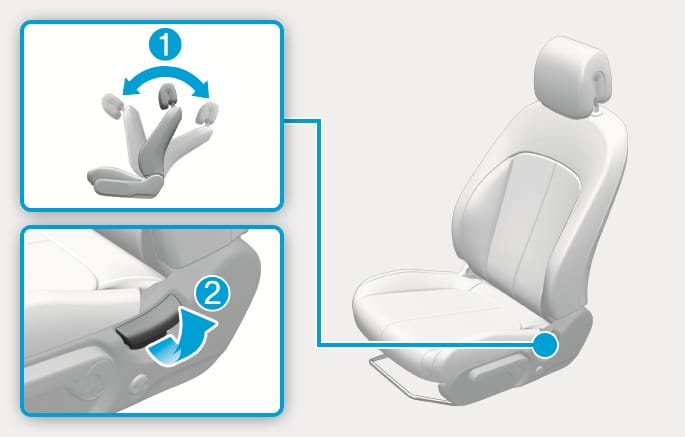
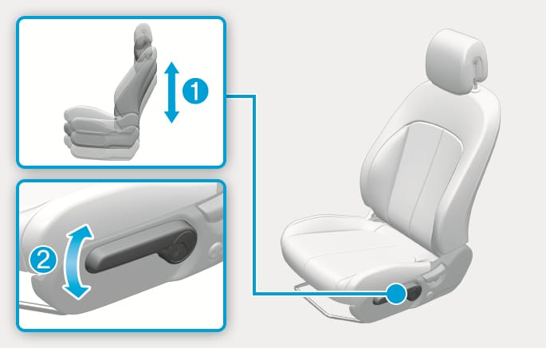

수동 조절식 앞좌석
좌석 위치와 등받이 각도를 조절한 후에는 좌석을 앞뒤로 흔들어 좌석이 확실히 고정되었는지 확인하십시오. 차량이 이동하는 중 좌석이나 등받이가 갑자기 움직이면 순간적으로 차량의 제어 능력을 잃어 심각한 사고가 발생할 수 있습니다.
좌석 위치 조절하기

2C_AdjustSeatForwardBackwardmanual
시트 전후 위치 레버를 당긴 상태로(2) 좌석을 앞뒤로 밀고(1) 좌석 위치 레버를 놓으십시오.
등받이 각도 조절하기

2C_AdjustSeatBackmanual
-
등받이 각도 레버를 당겨(2) 등받이를 수직 방향으로 복원하십시오(1).
-
레버를 당긴 상태로 편안한 자세가 될 때까지 등받이를 등으로 민 후 각도 레버를 놓으십시오.
좌석 높이 조절하기

2C_AdjustSeatHeightmanual
쿠션 높낮이 레버를 위로 당기거나 아래로 밀어(2) 좌석의 높이를 조절하십시오(1).
-
레버를 당기거나 밀 때마다 좌석이 조금씩 위아래로 움직입니다.
허리 지지대 조절하기
허리 지지대에 대한 자세한 설명은 다음 '전동 조절식 앞좌석'의 '허리 지지대 조절하기'내용을 참고하십시오.